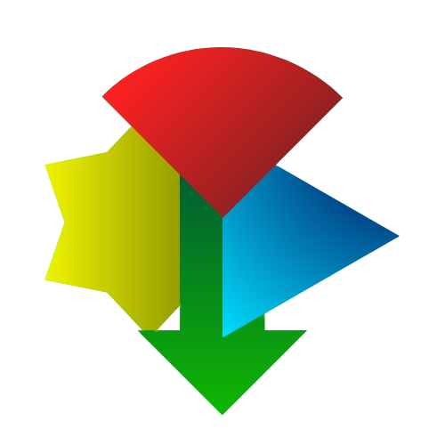

Gemini4Life
Welcome to the Future of the Past!
Hardware thought to be left behind still has a heart. Gemini4Life is a bridge built for your legacy computers to access the power of modern AI. We are opening a door to the future from your Windows 7 Aero glass or XP taskbar.
Bienvenue dans le futur du passé !
Le matériel que l'on pensait dépassé a encore un cœur. Gemini4Life est un pont conçu pour que vos anciens ordinateurs puissent accéder à la puissance de l'IA moderne. Nous ouvrons une porte vers le futur depuis vos fenêtres Windows 7 Aero ou votre barre des tâches XP.
Willkommen in der Zukunft der Vergangenheit!
Hardware, von der man dachte, sie sei veraltet, hat immer noch ein Herz. Gemini4Life ist eine Brücke, die gebaut wurde, damit Ihre alten Computer die Leistung moderner KI nutzen können. Wir öffnen eine Tür zur Zukunft direkt von Ihrem Windows 7 Desktop.
Benvenuti nel futuro del passato!
L'hardware che si pensava fosse superato ha ancora un cuore. Gemini4Life è un ponte costruito affinché i vostri vecchi computer possano accedere alla potenza dell'IA moderna. Apriamo una porta verso il futuro dal vostro Windows 7 o XP.
Добро пожаловать в будущее прошлого!
Оборудование, которое считалось устаревшим, все еще имеет сердце. Gemini4Life — это мост, созданный для того, чтобы ваши старые компьютеры могли получить доступ к мощности современного ИИ. Мы открываем дверь в будущее.
LET'S BEGIN! / COMMENÇONS!